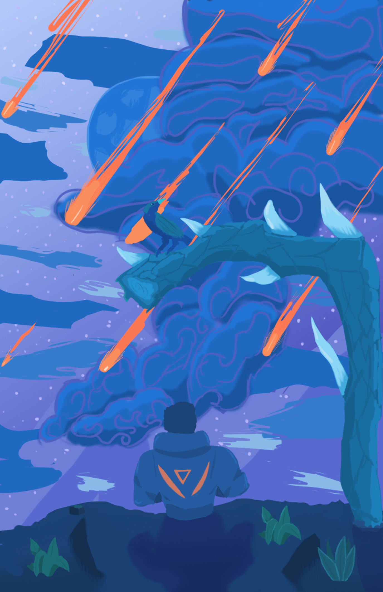

Digital drawing made in photoshop. The piece features a mainly monochromatic color scheme. The piece is meant to show how lonliness can make even the most beautiful nights feel empty. Its a take on feeling left out. The character in this image was forced to witness this alone.